CH27 — ep
episode一覧（サムネ付き / 綺麗なURL）
ep
Script Viewer
snapshot
guide
老後の心がほどける物語 (CH27)
script 30/30
updated_at: 2026-01-13T11:01:50.708525Z
URL例:
/ep/CH27/001/thumb/
イラストサムネ（縦長） 一覧
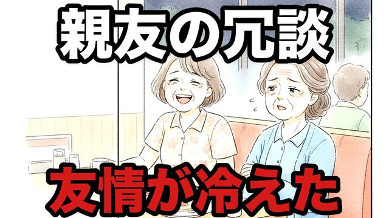
CH27-001
親友の「冗談」が刺さった夜…私は笑えなかった
script ✓
画像 1
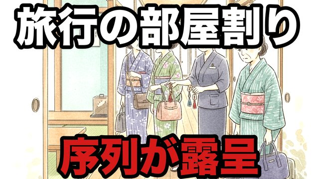
CH27-002
旅行の部屋割りで全部わかった…私の立ち位置
script ✓
画像 1
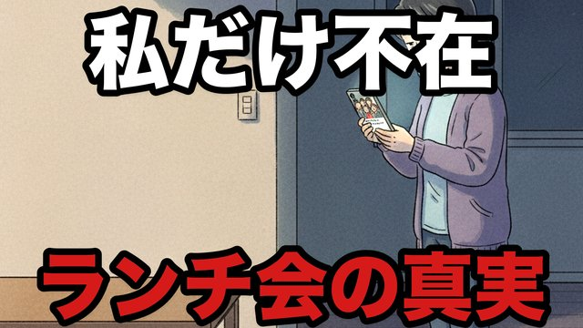
CH27-003
私だけ誘われない…写真の一言で心が折れた
script ✓
画像 —
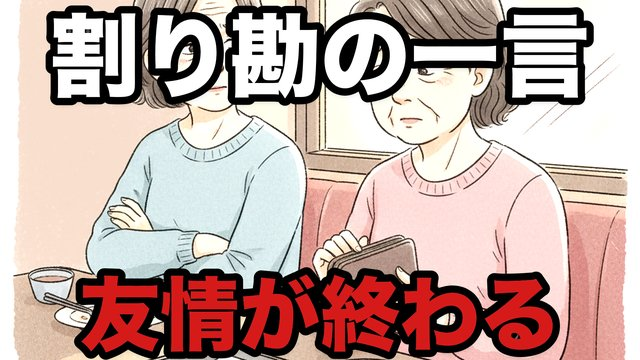
CH27-004
割り勘で揉めたのはお金じゃない…“言い方”だった
script ✓
画像 —
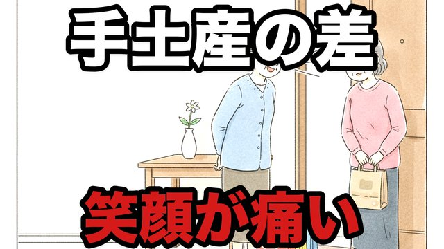
CH27-005
手土産の値段で笑われた…私は静かに帰った
script ✓
画像 —
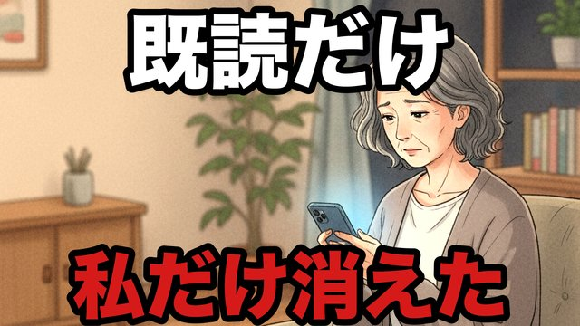
CH27-006
LINEグループが静かに消えた日…原因は“私の一言”
script ✓
画像 —
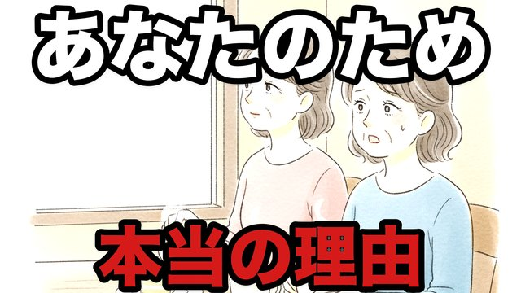
CH27-007
「あなたのため」が一番危険だった…親友が離れた理由
script ✓
画像 —
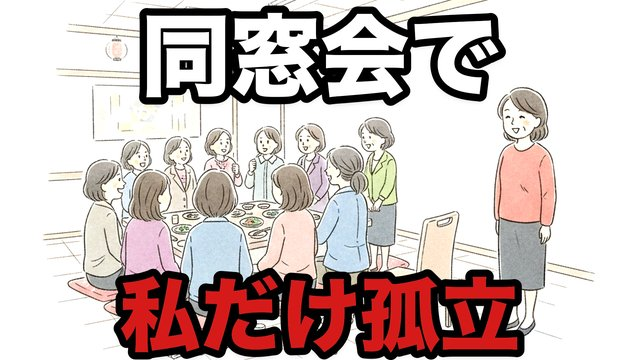
CH27-008
同窓会で私だけ浮いた…あの日の空気は忘れない
script ✓
画像 —
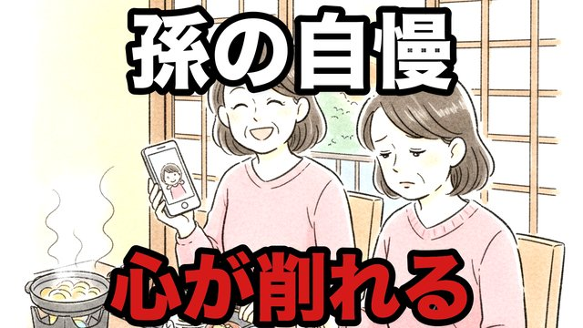
CH27-009
親友が“孫の自慢”を止めない…私の話は消えていった
script ✓
画像 —
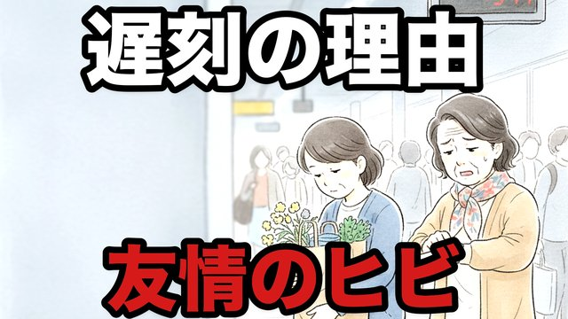
CH27-010
遅刻の理由が“私より大事”だった…胸が冷めた瞬間
script ✓
画像 —
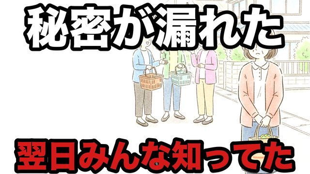
CH27-011
相談したのに“噂”になって戻ってきた
script ✓
画像 —
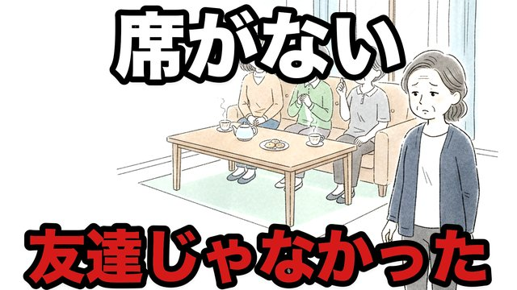
CH27-012
親友の家で“私の席”だけ無かった
script ✓
画像 —
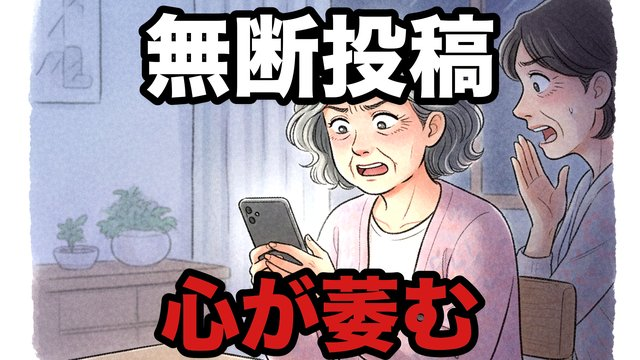
CH27-013
写真を勝手に上げられた…“老い”を晒された気がした
script ✓
画像 —
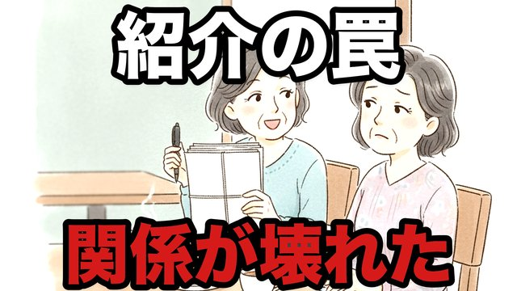
CH27-014
「紹介がある」…行ったら“勧誘”だった
script ✓
画像 —
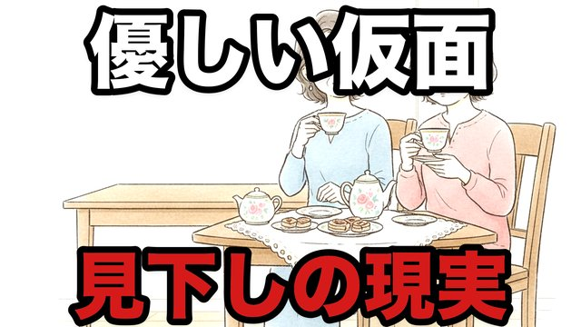
CH27-015
笑顔の下で比べられていた…30年の“優しさ”の正体
script ✓
画像 —
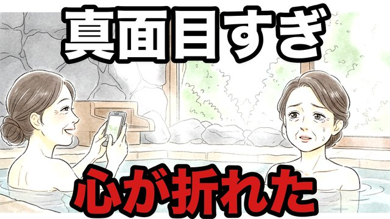
CH27-016
「あなたって真面目すぎ」…その言葉で終わった
script ✓
画像 —
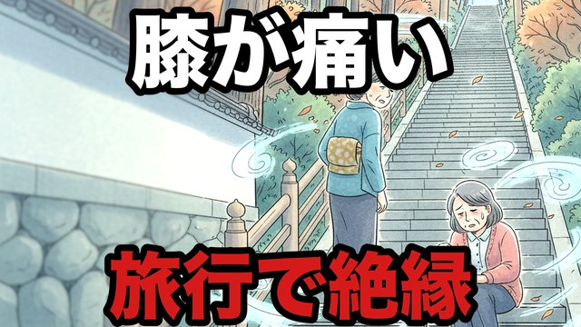
CH27-017
私の体力を笑った…旅行仲間として“もう無理”
script ✓
画像 —
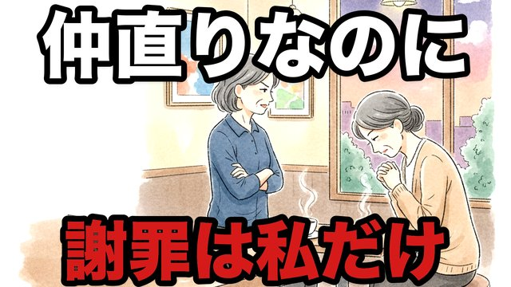
CH27-018
仲直りの食事で分かった…謝るのはいつも私だけ
script ✓
画像 —
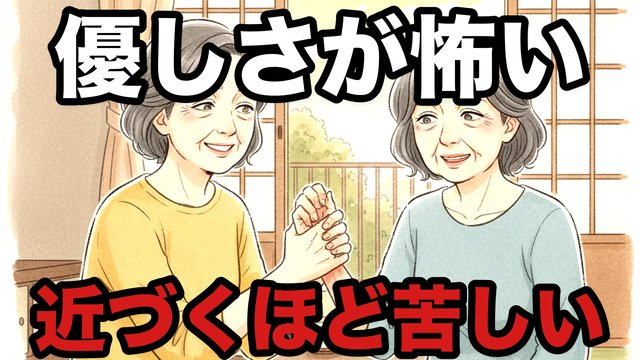
CH27-019
“優しすぎる人”ほど怖かった…奪う笑顔の正体
script ✓
画像 —
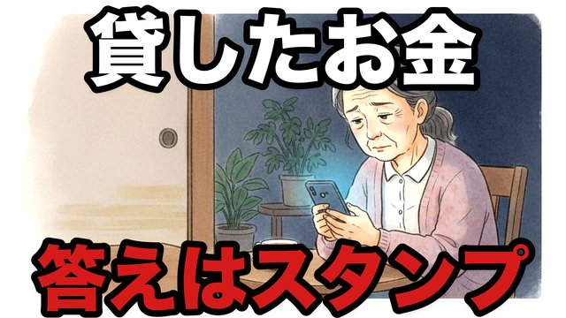
CH27-020
貸したお金より重かったのは“感謝ゼロ”の返事
script ✓
画像 —
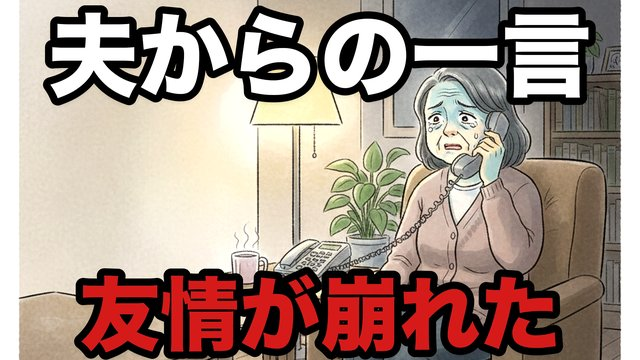
CH27-021
「うちの夫が言ってたけど」…その一本の電話
script ✓
画像 —
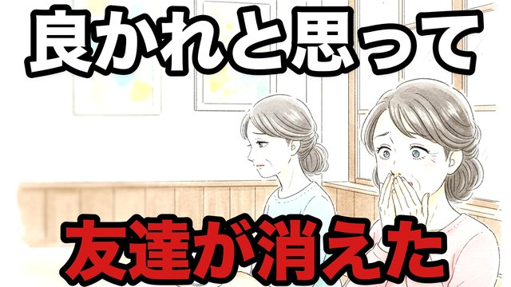
CH27-022
良かれと思った助言が“最後の一撃”になった
script ✓
画像 —
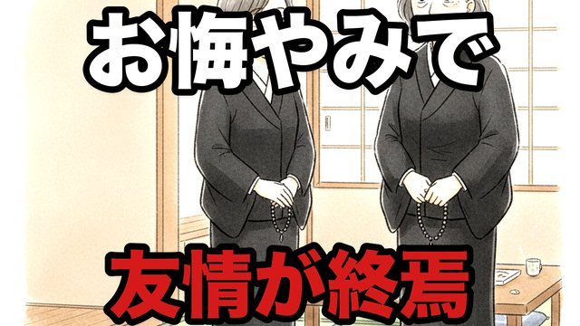
CH27-023
お悔やみの席で言われた一言…私は二度と会わない
script ✓
画像 —
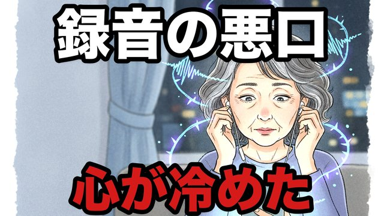
CH27-024
録音に入ってた“私の悪口”…涙も出なかった
script ✓
画像 —
CH27-025
「ありがとう」が言えない旅…帰りの沈黙が全てだった
script ✓
画像 —
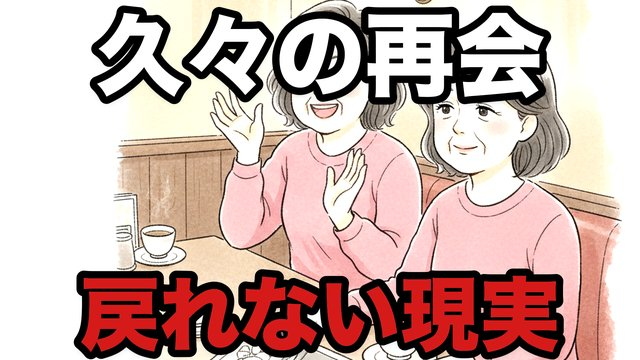
CH27-026
久々の再会で知った…私たちは“もう別の人”だった
script ✓
画像 —
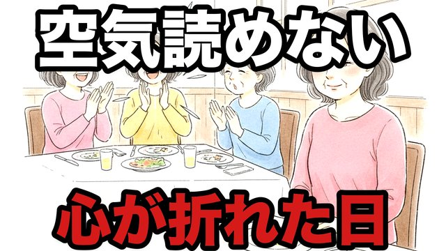
CH27-027
「あなたって空気読めない」…笑い声が痛かった
script ✓
画像 1
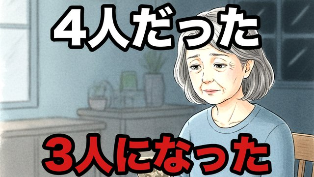
CH27-028
“仲良し4人組”が3人になった日…私の居場所はどこ
script ✓
画像 —
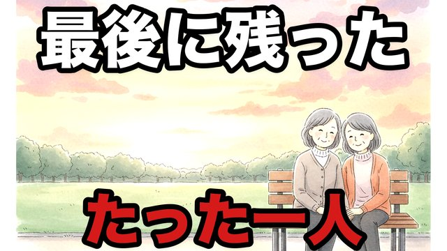
CH27-029
最後に残ったのは“たった一人”の静かな友だった
script ✓
画像 —
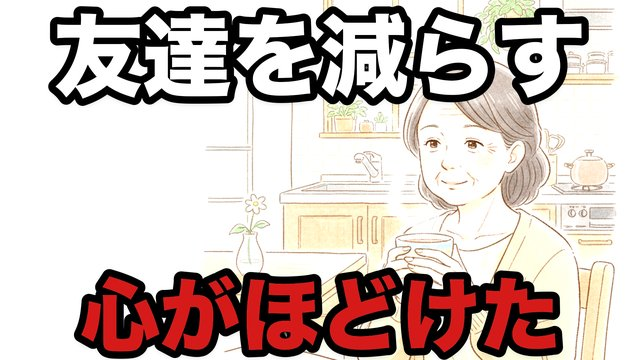
CH27-030
友達を減らしたら、心が軽くなった…罪悪感の終わり
script ✓
画像 —